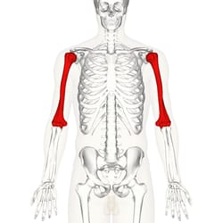

Tecnológico Boliviano Alemán
Por: Jhery Quito Rivera
Huesos de los Miembros Superiores
El húmero es un hueso largo que forma el esqueleto del brazo. Se extiende desde el hombro hasta el codo y constituye el único hueso del brazo.
